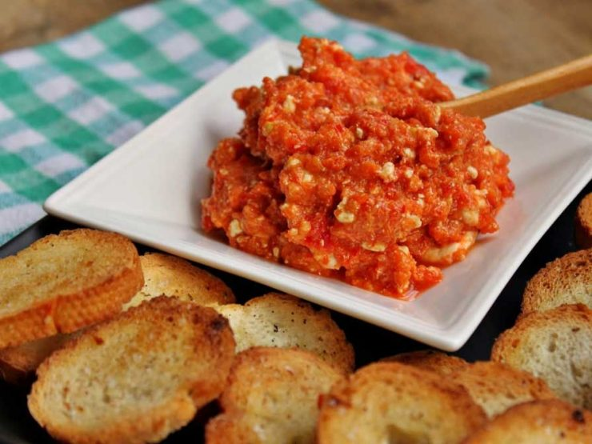

Urnebes

Urnebes, meaning chaos, disorder, hilarious.
Nothing describes better the Balkan than this salad, appetizer, main dish, dessert.
Don't get confused, urnebes is all of this things. It's really a chaos, but a chaos with taste.
Ingredients:
- ajvar
- white feta cheese
- garlic
- walnuts
- sunflower oil or olive
- chili pepper (optional)
Recipe instructions:
- Mash the feta cheese with a fork.
- Clean the garlic, chop it finely or press it using a garlic press.
- Mix both these ingredients.
- Add ajvar, walnuts, oil and the chili pepper
- Mix them.
- Enjoy.
Return to main page